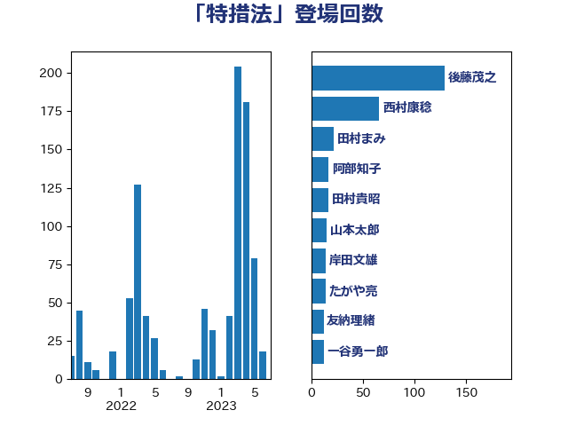

単語「特措法」

| 後藤茂之 | 自由民主党 | 129 回 |
| 西村康稔 | 自由民主党 | 66 回 |
| 田村まみ | 国民民主党 | 22 回 |
| 阿部知子 | 立憲民主党 | 17 回 |
| 田村貴昭 | 日本共産党 | 17 回 |
| 山本太郎 | れいわ新選組 | 15 回 |
| 岸田文雄 | 自由民主党 | 14 回 |
| たがや亮 | れいわ新選組 | 14 回 |
| 友納理緒 | 自由民主党 | 12 回 |
| 一谷勇一郎 | 日本維新の会 | 12 回 |
| 斉藤鉄夫 | 公明党 | 11 回 |
| 加藤勝信 | 自由民主党 | 11 回 |
| 足立康史 | 日本維新の会 | 10 回 |
| 馬淵澄夫 | 立憲民主党 | 9 回 |
| 大串博志 | 立憲民主党 | 9 回 |
| 塩川鉄也 | 日本共産党 | 8 回 |
| 仁木博文 | 無所属 | 8 回 |
| 高市早苗 | 自由民主党 | 7 回 |
| 萩生田光一 | 自由民主党 | 7 回 |
| 石原正敬 | 自由民主党 | 7 回 |
| 田中健 | 国民民主党 | 7 回 |
| 水野素子 | 立憲民主党 | 7 回 |
| 岩渕友 | 日本共産党 | 7 回 |
| 小沼巧 | 立憲民主党 | 7 回 |
| 倉林明子 | 日本共産党 | 7 回 |
| 青柳陽一郎 | 立憲民主党 | 6 回 |
| 西村明宏 | 自由民主党 | 6 回 |
| 小林鷹之 | 自由民主党 | 6 回 |
| 櫻井周 | 立憲民主党 | 5 回 |
| 末次精一 | 立憲民主党 | 5 回 |
| 新垣邦男 | 立憲民主党 | 5 回 |
| 岡田直樹 | 自由民主党 | 5 回 |
| 山本香苗 | 公明党 | 5 回 |
| 小西洋之 | 立憲民主党 | 5 回 |
| 小林茂樹 | 自由民主党 | 5 回 |
| 金子恵美 | 立憲民主党 | 4 回 |
| 竹詰仁 | 国民民主党 | 4 回 |
| 石井苗子 | 日本維新の会 | 4 回 |
| 渡辺博道 | 自由民主党 | 4 回 |
| 浅野哲 | 国民民主党 | 4 回 |
| 池下卓 | 日本維新の会 | 4 回 |
| 本庄知史 | 立憲民主党 | 4 回 |
| 川田龍平 | 立憲民主党 | 4 回 |
| 山際大志郎 | 自由民主党 | 4 回 |
| 山下芳生 | 日本共産党 | 4 回 |
| 大塚耕平 | 国民民主党 | 4 回 |
| 原口一博 | 立憲民主党 | 4 回 |
| 伊波洋一 | 無所属 | 4 回 |
| 井上哲士 | 日本共産党 | 4 回 |
| 中川貴元 | 自由民主党 | 4 回 |
| 高橋千鶴子 | 日本共産党 | 3 回 |
| 馬場伸幸 | 日本維新の会 | 3 回 |
| 進藤金日子 | 自由民主党 | 3 回 |
| 辻元清美 | 立憲民主党 | 3 回 |
| 藤岡隆雄 | 立憲民主党 | 3 回 |
| 篠原孝 | 立憲民主党 | 3 回 |
| 笠井亮 | 日本共産党 | 3 回 |
| 田村智子 | 日本共産党 | 3 回 |
| 横山信一 | 公明党 | 3 回 |
| 柳本顕 | 自由民主党 | 3 回 |
| 本田太郎 | 自由民主党 | 3 回 |
| 木村英子 | れいわ新選組 | 3 回 |
| 庄子賢一 | 公明党 | 3 回 |
| 山崎誠 | 立憲民主党 | 3 回 |
| 山口壯 | 自由民主党 | 3 回 |
| 塩田博昭 | 公明党 | 3 回 |
| 中川正春 | 立憲民主党 | 3 回 |
| 中島克仁 | 立憲民主党 | 3 回 |
| 鈴木英敬 | 自由民主党 | 2 回 |
| 野間健 | 立憲民主党 | 2 回 |
| 野中厚 | 自由民主党 | 2 回 |
| 谷公一 | 自由民主党 | 2 回 |
| 西銘恒三郎 | 自由民主党 | 2 回 |
| 若宮健嗣 | 自由民主党 | 2 回 |
| 緒方林太郎 | 無所属 | 2 回 |
| 神津たけし | 立憲民主党 | 2 回 |
| 玉木雄一郎 | 国民民主党 | 2 回 |
| 滝波宏文 | 自由民主党 | 2 回 |
| 浜野喜史 | 国民民主党 | 2 回 |
| 津島淳 | 自由民主党 | 2 回 |
| 森本真治 | 立憲民主党 | 2 回 |
| 柴田巧 | 日本維新の会 | 2 回 |
| 柚木道義 | 立憲民主党 | 2 回 |
| 松野博一 | 自由民主党 | 2 回 |
| 松本剛明 | 自由民主党 | 2 回 |
| 村田享子 | 立憲民主党 | 2 回 |
| 朝日健太郎 | 自由民主党 | 2 回 |
| 新妻秀規 | 公明党 | 2 回 |
| 平山佐知子 | 無所属 | 2 回 |
| 山井和則 | 立憲民主党 | 2 回 |
| 大石あきこ | れいわ新選組 | 2 回 |
| 堀場幸子 | 日本維新の会 | 2 回 |
| 國重徹 | 公明党 | 2 回 |
| 吉田統彦 | 立憲民主党 | 2 回 |
| 吉川沙織 | 立憲民主党 | 2 回 |
| 吉川元 | 立憲民主党 | 2 回 |
| 古川康 | 自由民主党 | 2 回 |
| 勝部賢志 | 立憲民主党 | 2 回 |
| 務台俊介 | 自由民主党 | 2 回 |
| 井坂信彦 | 立憲民主党 | 2 回 |
| 三浦信祐 | 公明党 | 2 回 |
| 三宅伸吾 | 自由民主党 | 2 回 |
| こやり隆史 | 自由民主党 | 2 回 |
| 鬼木誠 | 立憲民主党 | 1 回 |
| 高橋光男 | 公明党 | 1 回 |
| 青木一彦 | 自由民主党 | 1 回 |
| 階猛 | 立憲民主党 | 1 回 |
| 阿部司 | 日本維新の会 | 1 回 |
| 鎌田さゆり | 立憲民主党 | 1 回 |
| 鈴木宗男 | 日本維新の会 | 1 回 |
| 野村哲郎 | 自由民主党 | 1 回 |
| 里見隆治 | 公明党 | 1 回 |
| 遠藤良太 | 日本維新の会 | 1 回 |
| 西村智奈美 | 立憲民主党 | 1 回 |
| 西岡秀子 | 国民民主党 | 1 回 |
| 若林洋平 | 自由民主党 | 1 回 |
| 芳賀道也 | 国民民主党 | 1 回 |
| 舩後靖彦 | れいわ新選組 | 1 回 |
| 篠原豪 | 立憲民主党 | 1 回 |
| 笠浩史 | 無所属 | 1 回 |
| 空本誠喜 | 日本維新の会 | 1 回 |
| 稲津久 | 公明党 | 1 回 |
| 福島伸享 | 無所属 | 1 回 |
| 神谷政幸 | 自由民主党 | 1 回 |
| 田野瀬太道 | 無所属 | 1 回 |
| 田村憲久 | 自由民主党 | 1 回 |
| 田嶋要 | 立憲民主党 | 1 回 |
| 浜地雅一 | 公明党 | 1 回 |
| 泉健太 | 立憲民主党 | 1 回 |
| 河野義博 | 公明党 | 1 回 |
| 武部新 | 自由民主党 | 1 回 |
| 森屋隆 | 立憲民主党 | 1 回 |
| 柳ヶ瀬裕文 | 日本維新の会 | 1 回 |
| 東徹 | 日本維新の会 | 1 回 |
| 杉本和巳 | 日本維新の会 | 1 回 |
| 杉尾秀哉 | 立憲民主党 | 1 回 |
| 星北斗 | 自由民主党 | 1 回 |
| 早稲田ゆき | 立憲民主党 | 1 回 |
| 平木大作 | 公明党 | 1 回 |
| 岩本剛人 | 自由民主党 | 1 回 |
| 山田勝彦 | 立憲民主党 | 1 回 |
| 山添拓 | 日本共産党 | 1 回 |
| 山岡達丸 | 立憲民主党 | 1 回 |
| 山下貴司 | 自由民主党 | 1 回 |
| 小熊慎司 | 立憲民主党 | 1 回 |
| 小林一大 | 自由民主党 | 1 回 |
| 小宮山泰子 | 立憲民主党 | 1 回 |
| 宮本岳志 | 日本共産党 | 1 回 |
| 宮崎雅夫 | 自由民主党 | 1 回 |
| 太栄志 | 立憲民主党 | 1 回 |
| 大野敬太郎 | 自由民主党 | 1 回 |
| 大島九州男 | れいわ新選組 | 1 回 |
| 城井崇 | 立憲民主党 | 1 回 |
| 和田有一朗 | 日本維新の会 | 1 回 |
| 和田政宗 | 自由民主党 | 1 回 |
| 吉田豊史 | 無所属 | 1 回 |
| 吉井章 | 自由民主党 | 1 回 |
| 古川直季 | 自由民主党 | 1 回 |
| 北側一雄 | 公明党 | 1 回 |
| 伊藤孝江 | 公明党 | 1 回 |
| 伊藤俊輔 | 立憲民主党 | 1 回 |
| 井上英孝 | 日本維新の会 | 1 回 |
| 中野洋昌 | 公明党 | 1 回 |
| 中谷一馬 | 立憲民主党 | 1 回 |
| 上田清司 | 国民民主党 | 1 回 |